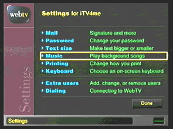
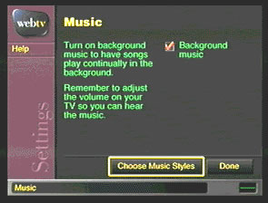
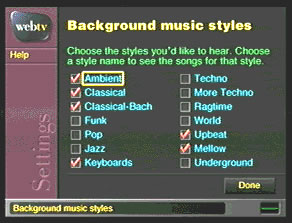
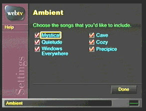

Music
WebTV had this really cool feature which allowed you to play background music while you surfed the web. The music was largely original, aside from some ragtime and classical interpretations. The music type was organized by genre, and you could select any number of genres to play. You could even select specific songs within the genre to filter out what you didn't like.




I'm sure many of you are aware the effects of hearing a song you haven't listened to in ages... which is why I was thrilled to recover most of the original WebTV midi library. It's clear whoever created these had a lot of fun. Below are some of my favorite songs.
(Hint: Do not play all of them at once unless you want to know how I feel going into a crowded grocery store).
chill_jingle.mid
CoolShad.mid
DeerXing.mid
Under.mid
Travel.mid
wind1.mid
sogrand.mid